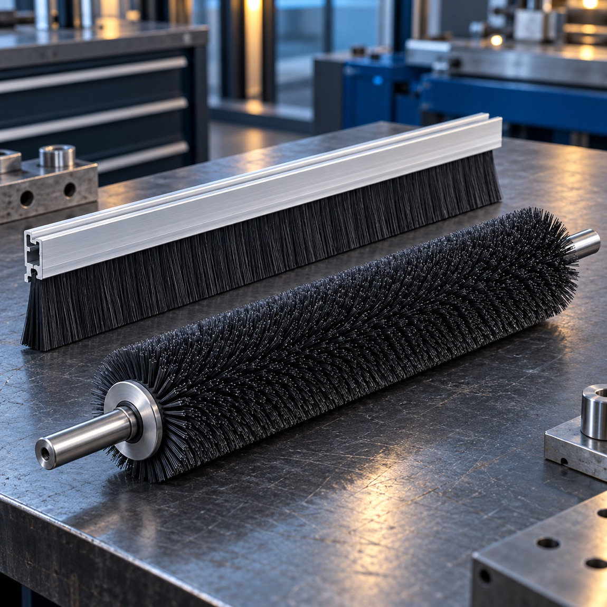

Roller-brush direction
For continuous or broad-area contact in machine lines. The brief should identify the workpiece path, contact zone, required surface action and drive or support arrangement.
Home / Roller & strip brushes
CONTINUOUS CONTACT
For repeat contact across a moving part or along an edge, brush-roll and strip formats can be assessed against line speed, working width, mounting and the task—such as cleaning, guiding, wiping or sealing.
Discuss a roller or strip brush
For continuous or broad-area contact in machine lines. The brief should identify the workpiece path, contact zone, required surface action and drive or support arrangement.
For edge-following contact such as dust control, guiding, wiping or sealing. Rail profile, length, trim and the surrounding equipment determine fit.
Working width, core or rail, filament choice, density and mounting should be reviewed together rather than selected as isolated dimensions.
LINE-INTEGRATION REVIEW
Photos of the machine and installation space can be as useful as a formal drawing. A sample or pilot evaluation can help confirm contact and finish.
| Task | Cleaning, finishing, guiding, wiping, dust control or sealing |
|---|---|
| Line context | Product path, speed range, wet / dry conditions and contact direction |
| Envelope | Working width, available space, core / rail and mounting points |
| Fill | Workpiece material, surface sensitivity and preferred fill direction |
| Approval | Sample objective, acceptable result and production review criteria |
Send the process, installation envelope and a photo or drawing. Final material, dimensions and operating limits require engineering confirmation.